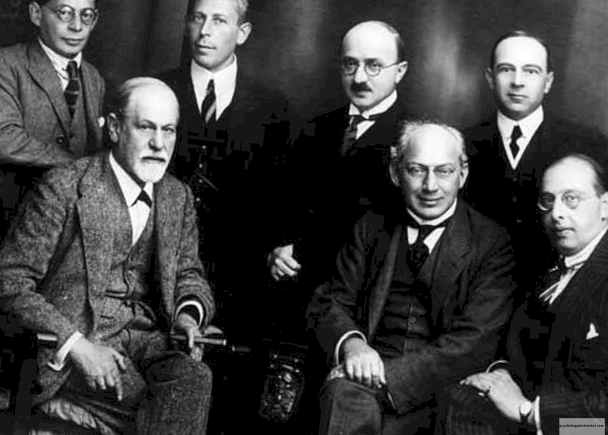

The Interpretation of Dreams
Sigmund Freud

Sigmund Freud, bottom left, the founder of psychoanalysis, a clinical
method for evaluating and treating pathologies in the psyche through
dialogue between a patient and a psychoanalyst.
Here's a time line of Sigmund Freud's life:
- 1856 - Sigismund Freud was born in Freiberg, Moravia, now part of the Czech Republic, to parents Jakob and Amalia.
- 1860 - After the failure of his father's business due to economic woes, the Freud family moved to Vienna, Austria, and settled in the Jewish neighborhood of Leopoldstadt.
- 1865 - Began attending the Gymnasium.
- 1873 - Graduated summa cum laude from secondary school and began studying medicine at the University of Vienna.
- 1875 - Changed his first name from Sigismund to Sigmund.
- 1881 - Received his doctorate degree in medicine.
- 1884 - Began studying the physical and psychological effects of cocaine.
- 1885 - Worked with Jean-Martin Charcot at the Salpetriere Hospital on hysteria and hypnosis.
- 1886 - Began his own private practice and married Martha Bernays.
- 1887 - Daughter Mathilda (1887-1978) was born, and he first met Wilhelm Fliess.
- 1889 - Son Jean Martin (1889-1967) was born. The boy was named in honor of Freud's early mentor, Jean-Martin Charcot.
- 1893 - Began formulating his seduction theory. Daughter Sophie (1893-1920) was born.
- 1896 - First used the term psychoanalysis in Zur Ätiologie der Hysterie. His father, Jakob, died the same year.
- 1900 - Published The Interpretation of Dreams.
- 1938 - Youngest daughter Anna Freud was arrested and interrogated by the Gestapo, so Freud moved to London with his wife and Anna to escape the Nazis.
- 1939 - Freud died on September 23 of cancer in London.
"He voice of the intellect is a soft one, but it does not rest until it has gained a hearing. Ultimately, after endless rebuffs, it succeeds. This is one of the few points in which one may be optimistic about the future of mankind."
-- Psychoanalyst Sigmund Freud